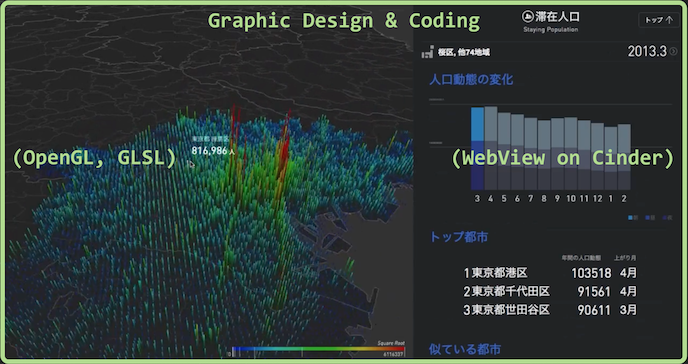
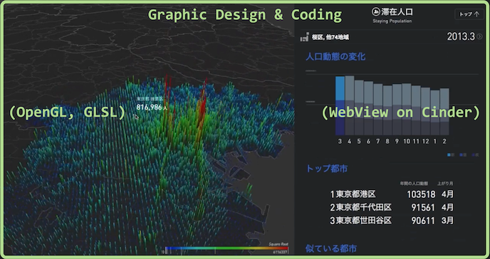

Ph.D Candidate @ The University of Tokyo, Computer Science
yuikita21@gmail.com | http://arcoyk.github.io/
Education
The University of Tokyo, Tokyo, Japan (Apr 2014 - present)
Ph.D. Candidate, Computer Science (SV: Prof. Jun Rekimoto)
Research Field: Human-computer Interaction, Telepresence, Learning, Video and tactile based human surrogation
The University of Tokyo, Tokyo, Japan (Apr 2012 - Mar 2014)Master of Arts and Sciences, Computer Science (SV: Prof. Jun Rekimoto)
Key Course: Human Interface, Network Industries, Applied Computer Science, Emerging Design and Informatics
Aoyamagakuin University, Kanagawa, Japan (Apr 2008 - Mar 2012)Bacherlor of Engineering, Computer Science (SV: Prof. Minoru Harada)
Key Course: Algorithm, Programming, Computer Archtecture, Logic Circuits, Natual Language Processing
Experience
Research Assistant | Sony Computer Science Laboratories (Sept 2015 - present)
Focused on the research and UI/UX design for the cave-like immersive telepresence system
Implemented the camera based interaction system using C++, OpenGL, OpenCV
UI/UX Designer | takram design engineering (Apr 2014 - Mar 2015)Implemented the camera based interaction system using C++, OpenGL, OpenCV
Implemented the interactive big population data visualizer using C++, OpenGL, GLSL, Cinder, Javascript
Chief Developer | Exploratory Software Project, IPA MITOH(Aug 2012 - Feb 2013)
Implemented the electronic circuits embeded cutlery for advanced dining experience.
R&D project management for human-computer interaction system.
Research Assistant | Igarashi Design User Interface Project, JST ERATO (Jun 2010 - Mar 2013)R&D project management for human-computer interaction system.
Designed and implemented the table top interface for digital appliance remote controls.
Implemented the live view streaming server for multiple webcams using C++ and OpenCV.
Implemented the live view streaming server for multiple webcams using C++ and OpenCV.
Skills
Language: Japanese, English
Programming: C, C++, Python, Ruby, Java, JavaScript, HTML, CSS, SQL
Framework: OpenFrameworks, Cinder, OpenCV, OpenGL, Rails, Flash
Software: Xcode, git, Adobe Illustrator, Adobe Photoshop, UNIX
Publications (Peer-reviewed International Conference)
1. Y.Kita and J.Rekimoto. Digitally Enhanced Utensils: Designing Time-sensitive Gustations.16th International Conference on Human-Computer Interaction 2014.
2. Y.Kita and J.Rekimoto. Thermal Visualization on Cooking. Proceedings of the 23rd International Conference on Artificial Reality and Telexistence (ICAT), Tokyo, Japan, 2013.
3. Y.Kita and J.Rekimoto. Spot-Light: Multimodal Projection Mapping on Food. 15th International Conference on Human-Computer Interaction 2013.
Awards and Grant
GOOD DESIGN GOLD AWARD (2015)
Outstanding Graduation Thesis, Aoyama Gakuin University (Mar 2012)
IPA MITOH: a government-led project with R&D grant (Aug 2012)
1st, business competition held by Recruit Holdings, Inc. (Sept 2014)
Exhibitions and Invited Talks
National Museum of Emerging Science and Innovation, CRISTAL (Table Interface for Home Devices)
The University of Tokyo (2012, iii Exhibition), CAPINNIT (Books that search images)
Maker Fair Tokyo (2014, Tokyo Big Sight)
Microsoft (2014, MITOH Conference), Wet Materials
Sony, in-house interactive demo (2015)
Recent Work (Contributed parts were highlighted)
 
RESAS (Launched by Ministry of Economy Trade and Industry):

RESAS (Launched by Ministry of Economy Trade and Industry):This projects aims to visualize big data for Japanese economics. I was one of 5 members working for this project, mainly contributed GUI design and coding (Contributed parts were highlighted). To realize interactive visualization, we used C++ as basic language, Cinder as a GUI framework, and GLSL or WebView as additional libraries.
https://resas.go.jp/
2016 YuiKita